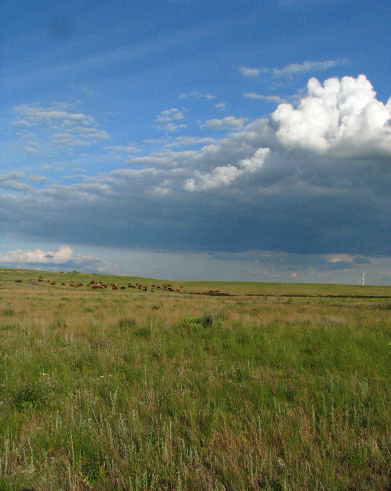

📷

Открой Оренбуржье
Почему с нами удобно
📍
Точные координаты на карте
✍️
Подробные описания от местных жителей
⭐️
Актуальная информация и отзывы путешественников
Популярные достопримечательности

Караван-Сарай
Историческое место · г. Оренбург
Автор: kraeved_56
📍 51.7640, 55.1076
📷 24 фото
Подробнее